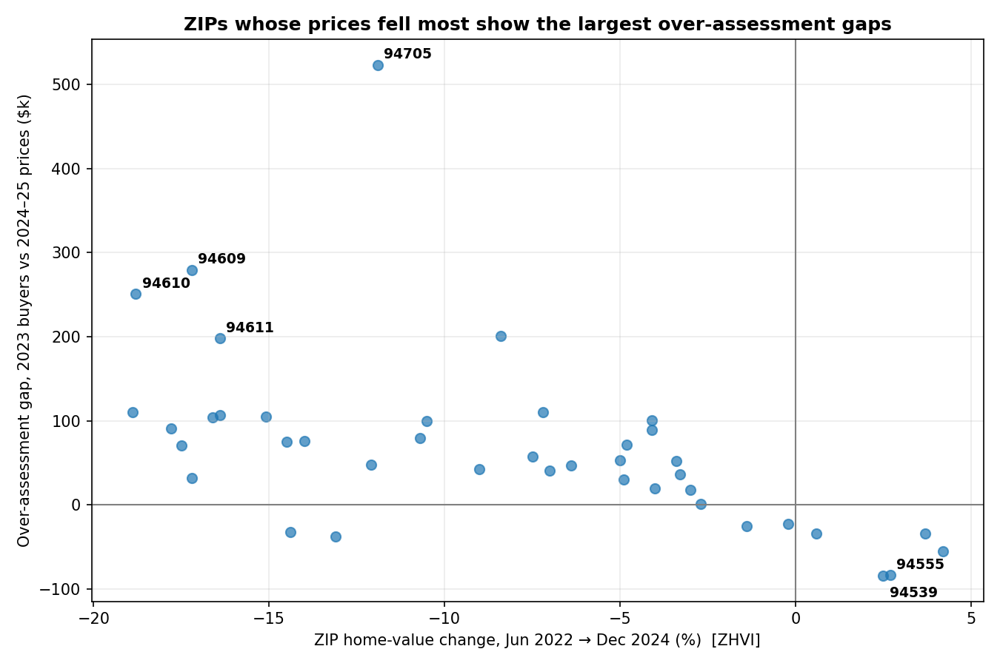

Alameda County Property Tax Imbalance Assessment
How evenly does the property tax burden fall across homeowners in Alameda County, California? Under Proposition 13, a home's assessed value is its purchase price plus at most 2% annual growth — so tax bills depend heavily on when a home was bought. This project measures that imbalance from the county's own open data: 489,628 parcels, 1,416 tax rate areas, 23,633 priced sales from 2023–2025, seven years of annual tax rolls, and ZIP-level price histories.
What it finds: Alameda County single-family homes held 31+ years are assessed at a median $238,000 versus $822,000 for homes bought in the last two years (3.5x) — the gradient is steepest in Oakland (4.2x). Effective tax rates run from 0.20% of market value for pre-1990 buyers to 0.94% for 2024 buyers (4.7x on ZIP-median proxies; plausibly 3–4x after accounting for within-ZIP value differences). 2023 buyers sit a median 3.5% above 2024–25 sale prices against their Prop 13 trajectory, with the gap concentrated in hillside ZIPs where prices fell furthest. And the county's Prop 8 decline-in-value relief, verified parcel by parcel in the tax rolls, has reached 22% of 2023 buyers — most of it years late.
The code and data pipeline are public. The full argument — what it means and what the county should do about it — is coming as an essay on the Writing page. This page is the technical companion: the data, how I got it, what I did with it, and where it falls short.
The question
Prop 13 ties a home's assessed value to its purchase price plus at most 2% annual growth. So two identical houses on the same street can carry wildly different tax bills depending on when they were bought — and buyers who purchased at the 2021–22 price peak may now be assessed above what their homes are actually worth. I measured both effects from public records.
Data sources
Everything below is public. The county publishes far more than most people realize:
- Parcel bulk feed — 489,628 parcels: assessed values, last recorded document, property type, tax rate area. Downloaded October 2026 via the county's ArcGIS FeatureServer.
- Property tax rates, 2024 + 2025 — the ad-valorem rate for each of 1,416 tax rate areas (two annual layers; the 2025 layer is truncated, so I filled gaps from 2024).
- Ownership transfer list, 2023–2025 — recorded transfers with sale prices backed out from the documentary transfer tax. 187,908 raw rows; 23,633 usable priced sales after dedup.
- Annual secured tax rolls, 2019–2026 — per-parcel assessed values, one layer per tax year. Seven layers, ~3.3M rows total. This is what made verification possible.
- Zillow ZHVI — monthly ZIP-level home values (smoothed, seasonally adjusted), used to date the 2022 price peak.
- FRED 30-year mortgage rates — the rate-shock evidence: 2.96% average in 2021, 6.81% in 2023.
How I got the data
Plain Python and requests, paginating the ArcGIS REST API
with resultOffset. Every download script checkpoints to disk,
so a dropped connection resumes instead of restarting — the seven tax-roll
layers took a few hours. Three gotchas worth knowing if you reuse this
data:
- The 2025 tax-rate layer is silently truncated at exactly 10,000 rows. 74 tax rate areas are missing; I filled them from the 2024 layer (which returns all 10,311 rows).
- The tax-rate join key needs normalizing. Parcels store the rate-area secondary as a zero-padded string; the rate layers use integers. A naive join misses 94% of parcels.
- The transfer list is mostly not sales. 62% of rows have blank transfer-tax values (exempt or non-arm's-length transfers) and 65% are duplicate transferor/transferee records. After dedup and priced-sale filtering: 23,633 sales, 99.7% joining to the parcel file.
What I found
The tenure gradient
Among Alameda County single-family homes, the median assessed value for homes held 31+ years is $238,000. For homes bought in the last two years: $822,000. Same county, same property type — a 3.5x gap, driven by the 2%-per-year cap compounding over decades. (In Oakland, the gradient is steeper: 4.2x.) Two caveats cut in opposite directions: longtime owners may own systematically smaller homes (which would shrink the gap), while refinance-recorded documents in recent buckets carry old low assessments (which biases the 3.5x downward). The effective-rate analysis below, which normalizes by market value, finds an even steeper gradient — so size differences aren't driving this.

Peak buyers are over-assessed — and the rolls prove Prop 8 works
Take 5,113 homes bought in 2023 — true purchase prices from the transfer records — and compare each home's assessed value against its Prop 13 trajectory. One subtlety the county's own rolls revealed: the 2% inflation factor is not applied at the first lien date for everyone. Buyers who closed January–June enrolled at ×1.02; July–December buyers enrolled at ×1.00 (the assessment-roll close, around June 30, decides). With buyer-specific trajectories, the group's factored values sit +$42,000 (+3.5%) above 2024–25 sale prices (95% bootstrap CI: +$7k to +$48k — sampling noise only; the true uncertainty is wider).
Tracing those buyers parcel by parcel through seven years of tax rolls: 22% have received a Prop 8 decline-in-value reduction — a strictly post-purchase year-over-year cut in assessed value, median cut 8.6%. The timing is the story: barely 2% had relief through the January 2025 roll; a ~20% wave arrived in the 2026 cycle. The safety valve exists and fires. It is years late.

The 2022 peak, dated
Zillow's ZHVI series shows 41 of 46 Alameda County ZIPs peaked in the spring of 2022, with a median drawdown of 13% since. But the recovery diverged: Oakland-hills ZIPs fell 17–23% and stayed down, while Fremont's 94539 and 94555 barely fell at all. That divergence drives the over-assessment map — mechanically so: a ZIP's gap is approximately its factored growth (~4–5% for the typical buyer) minus its actual price change, so the ranking of gaps follows the ranking of price drops by construction. The genuine empirical content is the divergence itself, corroborated independently by ZHVI.


Why not the gold standard
The textbook design is a repeat-sales study: same house, purchase price vs. resale price. Three problems blocked it:
- No pre-2023 bulk sale history. The parcel feed carries only the latest recorded document, not a sale history. (The 2023–2025 transfer list plus the annual rolls back to 2019 enabled the paired 2023 test above — the closest feasible design — but not a full pre-2023 history.)
- The mechanical comparison trap. Comparing a sale price against the reassessment that the sale itself triggered tells you nothing under Prop 13; the informative benchmark is the prior 2% trajectory.
- Selection in quick resales. Homes bought in 2021–22 and resold by 2024–25 are a selected subset, not a random sample of the cohort.
I also caught and fixed a real contamination mid-project: the first cohort design used latest-document dates as sale proxies, but the 2021 refinance wave meant the "2021–22 buyer" benchmark was mostly refinances, not purchases — a median $822k benchmark against a true $1.22M. Those numbers were struck and the analysis rebuilt on transfer-record prices. The superseded scripts stay in the repo, labeled, for transparency.
Limitations
- Market values are ZIP/property-type medians, not parcel-level comps — the county bulk data has no interior square footage, bedrooms, or bathrooms. Cohort medians are the robust unit.
- The cross-section gap compares different homes (2023 buyers vs. 2024–25 sellers). Composition shifts between the seller pools flow into the gap; the reported confidence interval covers sampling noise only.
- 2025 transfer data is a partial year.
- Latest-document year is not pure ownership tenure (refinances pollute it).
- Transfer-tax-implied prices check out against assessed values uniformly across cities (median ratio 0.993–1.000), so no city-level transfer-tax distortion.
- No demographics join — deliberately out of scope. This is a Prop-13-mechanics story, not a demographic-equity story.
Code
Everything — downloads, analysis, charts — is on GitHub. Bulk data is excluded from the repo (hundreds of MB); the README documents how to reproduce it from public sources.